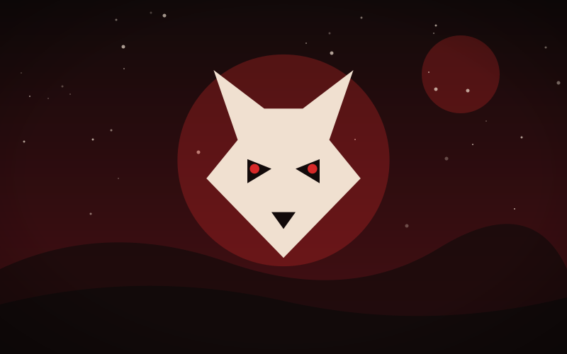

Clockwork Garden
Genre: Fantasy
Synopsis
A gardener builds flowers from brass and gears, until one of them begins to dream.
Chapter 1: Gears in Bloom

Old Fenwick's greenhouse never needed rain. His roses were copper, his ferns were coiled springs, and each morning he wound them with a tiny silver key.
One spring a tulip stayed closed after winding. When he leaned close he heard it ticking out a tune he had never built into it.
He sat beside it all afternoon, listening. By sunset the tulip opened, and inside its petals sat a seed that was not metal at all.